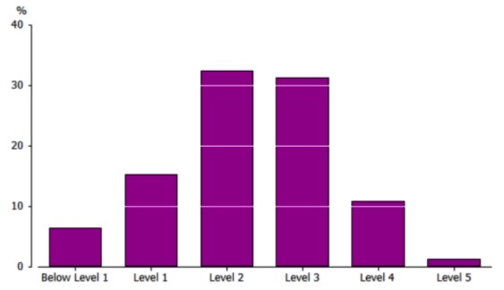
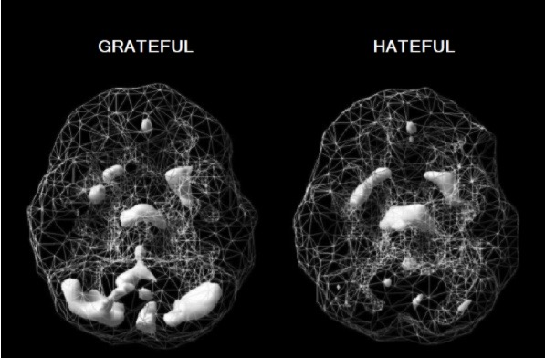
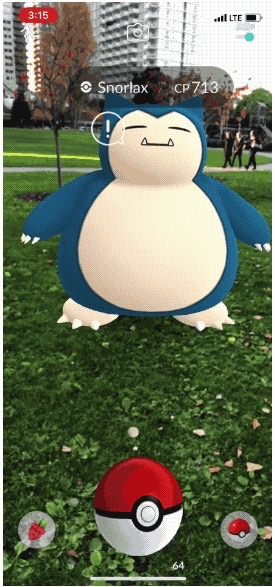
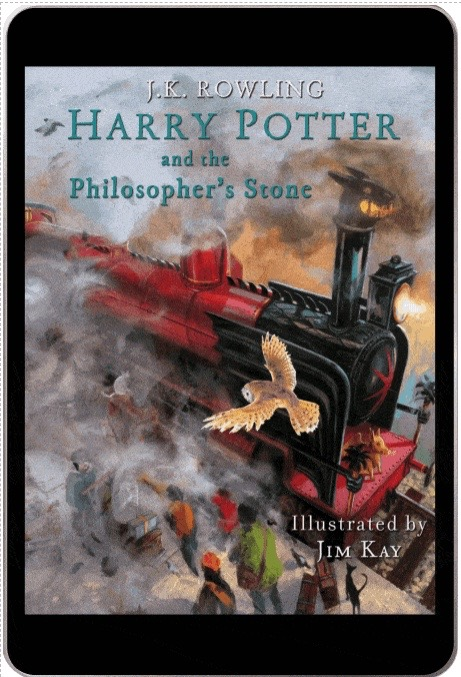
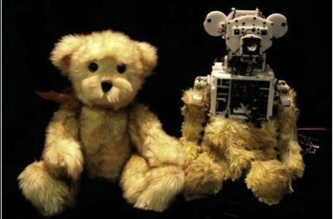

More info about our industry data

Interview with Eric Burns
AI, Cloud and security
The format and delivery of education has remained largely unchanged for the last 100 years. Mobius Education (named after the surface with only one side, pictured above) transforms the subject of mathematics into a journey of wonder, fun and exhilaration. It's maths education for the 21st century child using the latest technologies including AI, machine learning, virtual reality, augmented reality, gaming, animation and HD video including animated eBooks. The student (player) is transported from their classroom into worlds where they see how maths really works. No more tedious, boring classrooms where teachers talk for hours and scribble on a blackboard. At Mobius, children learn maths in an interactive and natural manner, making them fall in love with the beauty of formulas and calculations. By the end of the course, students will achieve a high level of mathematical fluency and be able to flourish in an ever evolving world.
Maths is a language, like English, but even employed people have problems understanding and speaking it. According to data from ‘Programme for the International Assessment of Adult Competencies (PIAAC),’ employed people aged 15 to 64 years who worked in 'Professional, Scientific and Technical Services' had numeracy skills that were high (70% at Level 3 or above), but those working in Construction, Administration and Manufacturing were low (44%, 39% and 42% at Level 3 or above respectively). Numeracy levels among the general Australian population (both employed and unemployed), were low. Close to 6.5% (1.1 million) of Australians had numeracy skills at Below Level 1, 15% (2.5 million) at Level 1, 32% (5.4 million) at Level 2, 31% (5.2 million) at Level 3, 11% (1.8 million) at Level 4 and 1.4% (230,000) at Level 5.2  Figure 3. Proportion of Australians at each numeracy level(2011-12).
Mathematics has allowed society to advance to a point where the average lifespan of a child born in 2000 is 100 years old.3 Without mathematical skills, engineering and science will not progress, leading to stagnation and serious consequences to our species in the event of a global pandemic or natural disaster such as a volcanic eruption or asteroid collision. Today there is growing shortage of qualified people in the STEM fields. Much of this has to do this a lack of mathematical knowledge.
The inability to rationally understand statistics, large numbers, graphs and probabilities has also resulted in a population that can be easily manipulated and misinformed in areas of great importance - governmental policies, personal life decisions, medicine and finance. Pseudoscience and conspiracy theories are rising and the recent Covid-19 pandemic has highlighted this well. It is more crucial than now than ever to possess a clear, logical way of looking at the world. It is literally a life or death situation at the moment. Lastly, mathematically competent people tend to be wealthier. People with higher scores in numeracy make more money from wages and salaries. In the PIAAC study, 89% of Australian high-income earners had a numeracy level of 3 or higher, compared to only of 29% of low-income earners.
Mobius Maths is a custom designed course for Prep to University students using the latest technologies with lifetime access. To personalise maths education, each child firstly undergoes a single photon emission computed tomography (SPECT) scan to see how blood flows to their brain. We check for any abnormalities and problems every year and enter the data into a brain bank, which a student can access on our online platform. A healthy, well-functioning brain is the foundation of education and a happy life. When the brain is troubled, a child will struggle to be their best selves. Based on the results, the child will be given an AI designed brain diet including supplements (Omega 3 fatty acids, multi-vitamins, etc) and an exercise regime to maximise mental performance. The food that we eat and the amount of exercise we do has a profound effect on how our brain functions.
 Figure 2. SPECT scan of a healthy brain
Figure 2. SPECT scan of a healthy brain
Afterwards, the child takes a psychometric test, beginning in Prep and every 6 months afterwards until they finish the course. The results will be part of a training data set for AI to learn from. Algorithms will generate a personalised course suited to the child’s character, personal interest and learning style. As the student changes and grows, so too does the course, creating a flexible and ever evolving learning environment. She can learn and progress through the course at her own speed. Learning is not a race. Having a deep understanding of maths is the priority at Mobius.
Far too many students sit in a classroom, surrounded by thirty other students, receiving little to no attention from their teacher. At Mobius Education, each child has their own intelligent virtual teacher called MoBi, who guides them through their course until they complete it (with a 100% pass rate per level so there are no learning gaps and the student grasps advanced topics with ease). Mobi ensures the child never feels alone or disorientated. MoBi is like Siri, an intelligent assistant from Apple Inc.1 He has a natural-language user interface.
 Apple Siri assistant
Apple Siri assistant
MoBi, however, is also equipped with latest data in psychology, biology, neuroscience and of course mathematics (by ingesting all the research papers and books available), as well as the child's input data given during each psychometric test. Not only will he be able to organise his students maths course and keep track of her progress, he'll be able to hold an intelligent, meaningful and emotionally rich two-way conversation with her.
He'll be able to adjust and morph into any character (a warrior, an alien, a character from a favourite book, or even a talking car like Kitt7) to better understand and connect with his student. MoBi will even be able to take physical form using our other products (our computerised teddy bear for example). As the child's personality and learning style changes, so too will MoBi. He will synchronise and align conversations with the interests of the maturing child. MoBi is not only the student's guide, but also her friend. He will boost her self-esteem, confidence and learning ability, ensuring she excels not only in maths, but in life. MoBi will be the child's confidant during the learning journey. This personal touch is often missing in today's education.
At Mobius Maths, we take fun seriously. Education is a positive, playful and entertaining experience. Obtaining knowledge is about understanding and appreciating the world, being curious and solving problems. When we are children, we learn to speak a language so we can communicate and express our feelings to our family. It was an easy, immersive and interactive experience. We didn't even realise we were learning such a complex subject with its own grammar and syntax. Maths needs to be taught in a similar manner. However, the current school system concentrates on rote memorisation and competition, two things that create anxiety and hatred towards the subject. Negative thinking decreases blood flow to the brain, making it harder to learn and gain deep understanding.
At Mobius, creativity and enjoyment is at the core of our learning experience. Today, the most common tool for complex maths visualization in the classroom is the TI-84+ calculator. That's why at Mobius we've developed a blended learning model that captures a child's attention and helps them visualise maths, the key to truly understanding it. The maths skills they gain are applicable to the real world.
Our gaming platform simulates different experiences for each grade level. We incorporate traditional gaming styles, as well as the latest in virtual and augmented reality. As an industry, video games generated $US119.6 billion in revenue during 2018, and the demand for thrilling games is only increasing.24 The ever popular Pokemon Go has 60 million active users per month.6 At Mobius, we have thousands of high quality simulations to choose from, and all are easily manipulated to suit an individual student, i.e. AI designs the game with the child.
Maths games aren't simply about doing equations. Each product explores a different part of our world. It's hands on and practical. For example, children interested in space technology can help build a space rocket at NASA (like in the Kerbal Space Program12) then learn calculus and trigonometry. A child excited by war games can help orchestrate an army to destroy an enemy, then learn about statistics and probability. The child's imagination is the only limit.
No more lugging around heavy textbooks. At Mobius, each child has their own digital library for a lifetime. Books are an important part of the learning experience. Creative stories are how we communicate to the world and convey information. Taking a lesson from Harry Potter, one of the world's best-selling children's book series with over 400 million copies sold, we at Mobius have created a line of entertaining children's books with characters that move, speak and even jump out of the book (via augmented reality). Auto-reading features allows the student to follow along at whatever speed they find comfortable, while a natural sounding voice reads to them.
We also have a range of mathematical collector cards (digital and paper) that are illustrated, animated and use AR technology. Inspired by the Pokémon Collector Cards, the Mobius Collector Cards feature a range of cute Anime characters for young children and beautiful illustrations for older students.
People are spending more time streaming video content. Entertaining cartoons are an effective learning tool for teaching maths to young children and adults alike. Colourful animations mixed with funny, novel and emotionally charged storylines increases memory retention.14 At Mobius, we have an exciting range of cartoons to suit every taste, including Pixar-styled animations with 3D rendering. For older students, we have a range of maths documentaries that rival PBS and Discovery Channel. They educate the student on everything from Sir Isaac Newton's discovery of Calculus to Maxwell's equations for electricity. All topics are covered and easily accessed on our website or other streaming platforms including Netflix, Amazon, YouTube and Facebook.
Mobius Education incorporates toys and the 'Internet of Things' into learning such as our talking teddy bear, robot, warrior, car, jewellery, watch, jumper etc. It enables MoBi to take a 3D physical form in the real world and interact with the child through touch. For example, through the teddy bear, MoBi can give the child a hug. The child can now take MoBi anywhere there is wireless internet connection, so learning doesn't have to stop at the desk, but can move anywhere the child wants to go. We also have a range of 3D printed mathematical toys to further help a child visualise mathematics, ranging from simple blocks and triangles to knot theory, regular polyhedra and four-dimensional spaces
Integrating all these applications onto one user-friendly online platform requires a lot of technologies to work seamlessly. To create these products, computers that have Windows, Mac or Linux installed with high-speed internet access (4G or 5G) are needed.
The virtual teacher works primarily on five technologies; Machine Learning, Computer Vision, Speech Recognition, Natural Language Processing (NLP) and Deep Learning. IBM Watson can be trained using large datasets from the students as well as research on psychology, biology, mathematics and neuroscience.
Process: A prototype of MoBi can be built (for free) using IBM Watson Assistant services. Here, an AI conversational agent, i.e. a chatbot, can be created. Using IBM Watson Speech to Text and Text to Speech services, the chatbot can talk with the user via text or voice commands in a natural language conversation. It can be trained to learn and evolve through user feedback and linked to Watson Discovery (unstructured data analysis service). Watson Assistant and Discovery services are hosted on the IBM Cloud platform.
Integrating all these applications onto one user-friendly online platform requires a lot of technologies to work seamlessly. To create these products, computers that have Windows, Mac or Linux installed with high-speed internet access (4G or 5G) are needed.
The virtual teacher works primarily on five technologies; Machine Learning, Computer Vision, Speech Recognition, Natural Language Processing (NLP) and Deep Learning. IBM Watson can be trained using large datasets from the students as well as research on psychology, biology, mathematics and neuroscience.
Process: A prototype of MoBi can be built (for free) using IBM Watson Assistant services. Here, an AI conversational agent, i.e. a chatbot, can be created. Using IBM Watson Speech to Text and Text to Speech services, the chatbot can talk with the user via text or voice commands in a natural language conversation. It can be trained to learn and evolve through user feedback and linked to Watson Discovery (unstructured data analysis service). Watson Assistant and Discovery services are hosted on the IBM Cloud platform.
An understanding of Python, artificial intelligence, machine learning, data analysis (including how to input data to avoid a bias output), Natural Language Processing, linear regression, statistics and probability. Links: Machine Learning: IBM.Machine and Assistant: IBM.Assistant
Developing a user-friendly platform that hosts all the Mobius products, including high quality video streaming, requires IBM Cloud for servers and data centers. Python coding can be written on Jupyter notebook and HTML5 and CSS on Brackets software. Git software and GitHub can be used for maintaining code repositories. A hosting service and domain name will also be needed.
Hosting: With the scale of project and processing data required we will require a minimum of two dedicated severs in separate locations from InMotion due to their great performance on tech-intense platforms. Both servers would store data unilaterally, however only one would be providing the ongoing services, while the other serves as a backup in case of unmanageable attacks or other unforeseen circumstances.
Server Software: For the server software we would use Apache HTTP Server, as it’s free and open source, allowing for flexible design.
Domain: For ease of access for users we would purchase domain names that contain “mobius”, “mobi”, “mobiusmaths”, “mobiusmathseducation” with multiple extensions. Hosting all the domain names with InMotion will allow for easier management of our platform.
Security: To make sure that children’s data is properly protected we will be applying CloudFlare advanced security products, such as Argo Tunnel, Bot Management, DDoS protection and any other services deemed required over development of the platform. To make sure our internal networks are protected, we would be using Cisco Firepower 1150 Firewall, along with Cisco Anyconnect VPN to allow for safe remote work.
Website Development: The entire website including the database will be written in Visual Studio Code and managed between team members using GitHub. We would start by developing the basic HTML and CSS design, followed by database, client access, MoBi AI and content (eBooks, collector cards, videos, etc.)
App Development: As a supplement for basic website access we would be developing an online app that allows to access the portal from any mobile device. As such we will have to develop applications for Android devices using Kotlin language and Android Studio, for Apple, Swift language in Xcode and for Windows, C++ or C# in Visual Studio Code.
An understanding of Python, HTML5, CSS3, JavaScript, jQuery, Bootstrap, Express.js, React.js, Node.js, Database Theory, MongoDB, MySQL, C++, C#, Kotlin, Swift, Rest APIs, Command Line, Bash, Apache and Git.
Links:
Jupyter.note Brackets.editIllustration/Animation: Creating colourful digital art and animation requires Adobe Illustrator, Photoshop, Animate and Character Animator. Open source animation software options include Blender (for 3D rendering) and Inkscape. A Wacom Cintiq pen display can be used create digital drawings
Video: A Canon Camera and video-editing software such as Adobe After Effects, Premiere Pro and Rush can be used to create documentaries. Open source editing software options include Lightworks, VSDC or OpenShot.
Games: All games can be made in Unity Engine and Xcode to allow for more consistent teamwork. Requiring only C# and Swift to complete all of the games will also allow us to reuse the bits of code, speeding up production. We can categorise these into browser based, stand-alone applications, VR and AR games.
Graphic Design: The visual design will be specifically tailored to the age group the game is developed for, allowing to optimise the dopamine response of the brain to boost the long-term engagement of the child with platform. For browser-based games that would be part of the learning material we would focus on short 2d and 2.5d games that will load fast and provide smooth experience. For the stand-alone applications and AR games we would be more inclined to use 3d to provide a new level of engagement and variety. The Virtual Reality will allow us to dive deep into 3D, but also to explore the mathematical concepts of 4D figures. Most of the graphics can be designed inside the Unity Engine, otherwise we can always import 2D and 3D elements from a file.
Audio Design: For audio we would use Spectrasonics Omnisphere for software and get some available background soundtracks and pre-made sound effects available on the market. The background soundtrack would be optimised to child’s preferences based on collected data and the sound effects would further enhance the understanding of good and bad decisions within the games.
Mechanics: The entirety of mechanics would be designed mostly in Unity using C# and for Apple specific devices in Xcode using Swift. For the browser based and app games we could use the standard software, however for the development of AR and VR especially additional SDKs would be necessary. As the main goal is to teach a better understanding of mathematics all of the games will either be fully or partially a puzzle, logic or strategy oriented.
An understanding of children's literature, digital illustration and animation, filming, and video-editing. For gaming, experience with C#, Unity, Swift, Xcode, Spectrasonics, Virtual Reality, Augmented Reality and AI.
Blender AdobeElectrical components, a CPU, hard-drive, etc can be used to create the robotic teddy bear, warrior, car and IoT products. Movements can be programmed using Java or Python. For the jewellery and clothing, Microsoft Azure can deploy secure, scalable Internet of Things (IoT) applications. 3D Printers (Officeworks offers 3D-printing) with PLA, a biodegradable thermos plastic, can manufacture the math toys. Open source 3D design software includes Tinkercad and Autodesk 123D.
Physical Components: By creating a larger “core cube” containing a Raspberry Pi 4B with a battery and smaller “body cubes”, each containing a electromagnets around the middle of each edge (at specific intervals for the core cube) and electric connectors around the outside of each edge (separated by insulated section around the corner), and low voltage LED- touch display on each side we can make MoBi cube an interactive toy that can change shape into many forms to support the child’s education. Code: As the cube will already be using MoBi AI, we need to add scripts that will allow it to understand how many cubes are connected, what are their positions, how to translate shapes into specific changes of polarization in particular cubes, how to deliver a certain image using the display created by display combined from several cubes, how to recognize that cube has been physically detached or attached Interactivity: By utilising the touch-display, we can create games and responses specific to MoBi Cube, allowing it to physically interact with its user and keep them entertained with innovative games, show them their schoolwork, and much more.

An understanding of electronics, robotics, 3D-design, Python, C, C++ and Java.
IBM Watson Discovery can help customise a health regimen for the child by analysing the SPECT scan results and research papers/books on nutrition, exercise and neuroscience. Watson Discovery is an AI technology that can unlock hidden insights in unstructured data. This will help create the brain bank and process brain injury/health reports to students.
An understanding of machine learning, data analysis, linear regression, statistics, probability, neuroscience, nutrition, fitness and medicine.
Watson DiscoveryMathematics is a core subject that is taught from Prep to University. However, the delivery does not suit the modern environment, which is saturated with computers, video games, eBooks, VR, AR, and IoT products. All children deserve to understand mathematics. It is a fundamental language that enabled humans to move from straw huts to glass skyscrapers and then the moon. Mathematics needs an update or else humanity will suffer (and go extinct) in the long run. There will be a shortage of technologically skilled people who can innovate and create a better world. Personalised virtual teachers, maths through video gaming, colourful animations and AI designed courses are already being created and will be a reality for children all over the world in the not too distant future.